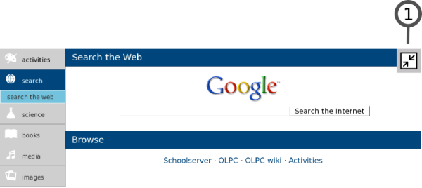

| Vue Accueil | Index | Le Cadre |
Lorsque vous jouez avec une Activité, vous utilisez la Vue d'Activité. Pour revenir à l'Activité en cours d'exécution, cliquez sur l'icône Vue d'Activité en haut à gauche du cadre (comme indiqué ci-dessous).
Vous pouvez aussi utiliser la touche Activité si votre clavier en possède une. Utilisez la touche F4 si vous possédez un clavier qui n'a pas de touche Activité.
Utilisez l'icône Activité en haut à droite du cadre, depuis n'importe quelle Vue, afin de revenir à la Vue d'Activité pour toute Activité qui est en cours.
Les Activités Sugar utilisent toujours l'écran entier. Ce dessin montre la Vue d'Activité pour l'Activité Navigateur.
1. Menus d'Activité
Les Activités possèdent un ou plusieurs menus qui apparaîssent en haut de l'écran.
2. Onglets
Cliquez sur les onglets se trouvant juste au-dessous du menu d'Activité pour passer d'un menu à l'autre.
3. Espace de travail d'une Activité
Le reste de l'écran est utilisé par l'Activité elle-même, dans cet exemple, Naviguer.
Toutes Toutes les Activités possèdent un menu Activité.
1. Nom de l'Activité
Le contenu de ce champ est celui sous lequel cette session de l'Activité apparaîtra dans le Journal. Prenez la peine d'entrer un nom afin de pouvoir retrouver facilement cette session là dans le Journal parmi les autres sessions de la même Activité.
2. "Partager" depuis le menu
Utilisez Partager dans le menu déroulant afin de partager une Activité avec vos voisins. Beaucoup d'Activités supportent le partage.
3. Bouton Conserver
Cliquez sur le bouton Conserver afin de forcer une Activité à sauvegarder son état actuel dans le Journal.
4. Bouton Arrêter
Utilisez le bouton Stop ou appuyez sur ctrl + esc pour sauvegarder une Activité dans le Journal et la fermer.
Beaucoup d'Activités possèdent un menu Edition.
1. Annuler/répéter
Les boutons Annuler/répéter ne sont pas présents dans toutes les Activités mais ils permettent généralement d'annuler ou de répéter vos plus récentes actions.
2. Copier/coller
Des boutons sont disponibles pour copier et pour coller. Vous pouvez également utiliser les raccourcis clavier ctrl + c et ctrl + v pour, respectivement, copier et coller. Les éléments que vous copiez finissent dans le presse-papier qui se trouve dans le coin gauche du cadre. Les articles que vous collez proviennent du presse-papiers.
3. Rechercher
Beaucoup d'Activités acceptent la fonction Rechercher: vous pouvez rechercher un texte dans une Activité en le saisissant dans la boîte de recherche.
4. Suivant/précédent
Dans le menu Edition, un tandem de touches vous permet de trouver l'occurrence du texte précédent/suivant dans la boîte de recherche.
Un grand nombre d'Activités possèdent également un menu de Vue.
1. Touche plein-écran
Cliquez sur le bouton plein-écran pour que votre Activité emplisse la totalité de votre écran, tout en cachant le menu.
2. Réduire/agrandir
Utilisez les touches réduire/agrandir pour changer l'échelle d'affichage de l'Activité, si l'Activité supporte cette fonction.

Quittez le mode plein-écran:
1. Bouton plein-écran
Utilisez le bouton plein-écran pour voir à nouveau les menus.
Un grand nombre d'Activités utilisent la barre située en bas de l'écran pour conserver des objets.
1. Bouton barre
Cliquez sur ce bouton pour faire apparaître ou disparaître le contenu actuel de la barre.
2. La barre
La barre se situe en général au bas de l'écran. Elle contient des objets associés à une Activité. Dans l'Activité Naviguer, des signets apparaissent sur la barre. Dans l'Activité Enregistrement, les objets média que vous avez créés sont placés sur la barre. Pour récupérer des objets, cliquez sur leur image sur la barre.
| Vue Accueil | Index | Le Cadre |